You can add default or automatic corrective actions to a question or a finding as you design your form in Form Builder. The method will depend on whether your inspection includes Findings and Corrective Actions, or is configured for Corrective Actions only. See the appropriate section below.
Findings and Corrective Actions
The form can include different types of configurations for findings and corrective actions:
To see how these appear to users, see Create Findings and Corrective Actions.
To add a finding:
After adding a question, select +Add Finding at the bottom of the question section.
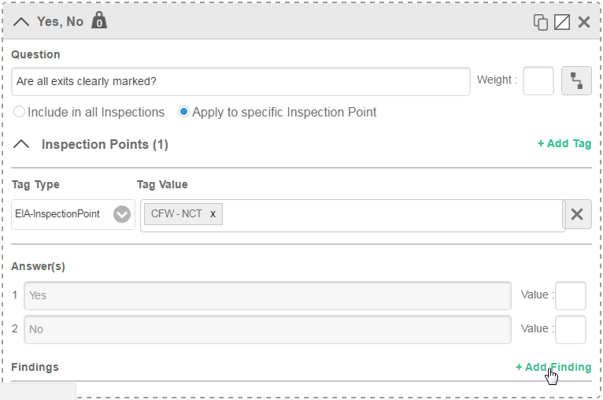
Apply to Answers: If you want a finding to be created automatically, select which answer(s) the finding applies to.
If you select an answer, the finding will be automatically created and will not be editable by users.
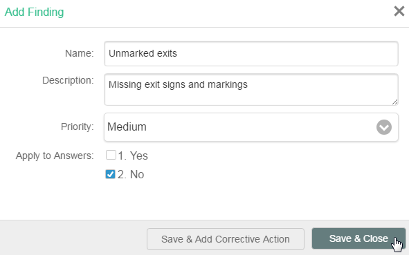
To create a dropdown list of possible findings Do not specify an answer that the finding applies to. When the user clicks to add a finding, the Findings dialog will appear with any findings created for the question that are not answer-specific in a drop-down list. Users can then choose the appropriate finding and edit the finding, if desired.
To add a default corrective action to a finding:
In the Add Finding dialog (above), select Save & Add Corrective Action.
Or, if the Finding has already been saved, in the Findings section of the question definition, select +Add in the Corrective Actions column.
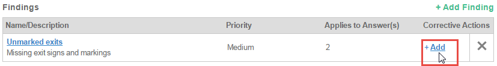
Define the corrective action:
Name: This text will appear as the name of the corrective action.
Recommended Corrective Action: This is the default text for the recommended action.
# of Days til due date: Enter the number of days after the inspection date upon which the Corrective Action should be due. This value will be pre-populated in the due date field based on the corrective action name chosen.
Require Action: If selected, requires that corrective action must be completed by entering a value for the Actual Action Taken. This prevents closing the inspection if the corrective action has not been documented. (Otherwise, all corrective actions will be automatically closed if the inspection is closed.) Corrective actions requiring action will be shown in the inspection followup form with a yellow warning icon.
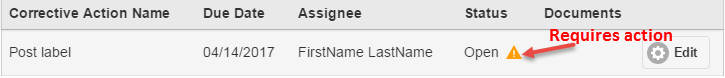
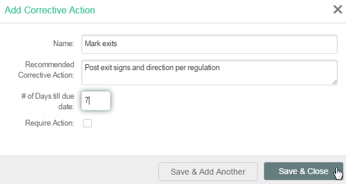
Select Save & Close. Or, if you want to create more than one corrective action, click Save & Add Another.
Corrective actions associated with Findings will be automatically created when the inspection is marked complete.
To edit a finding:
Select the finding name.
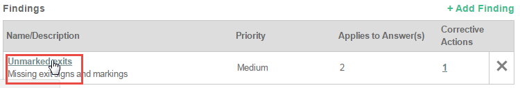
To delete a finding, click the X.
To edit a corrective action or add more corrective actions after saving:
Click the number in the corrective action column.
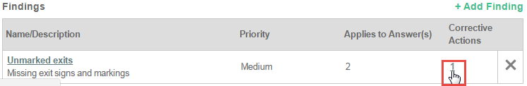
The pop-up dialog for a single corrective action lets you edit the details and save, delete the action, or add another:
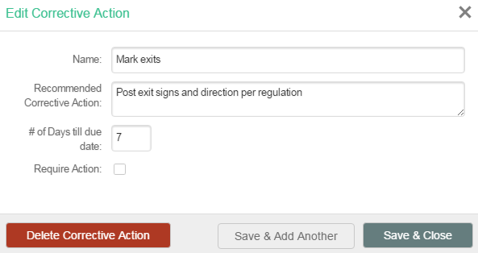
If there are multiple corrective actions, select the editing pencil to open the one you want to edit. You may also delete or add another from the dialog.
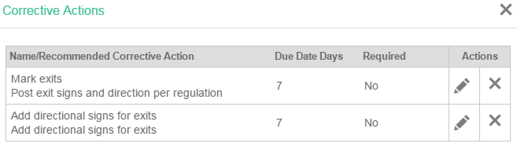
To add a default corrective action to a question:
In Form Builder, select the question for which you want to create a corrective action.
Select +Add Corrective Action.
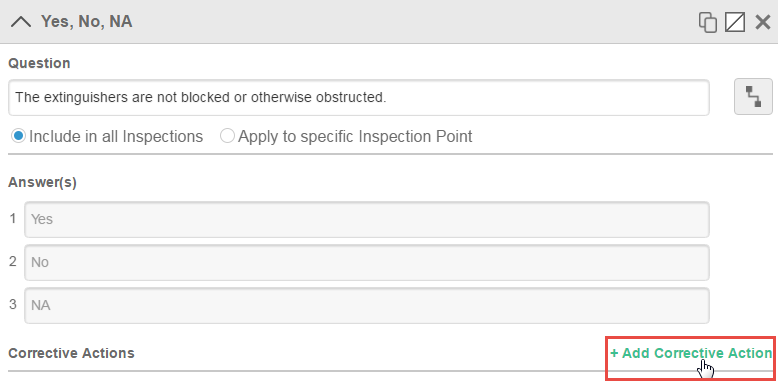
In the corrective action dialog, define the corrective action with these fields:
Name: This text will appear as the name of the corrective action.
Recommended Corrective Action: This is the default text for the recommended action.
# of Days til due date: Enter the number of days after the inspection date upon which the Corrective Action should be due. This value will be pre-populated in the due date field based on the corrective action name chosen.
Require Action: If selected, requires that corrective action must be completed by entering a value for the Actual Action Taken. This prevents closing the inspection if the corrective action has not been documented. (Otherwise, all corrective actions will be automatically closed if the inspection is closed.) Corrective actions requiring action will be shown in the inspection followup form with a yellow warning icon.
Apply to Answers: If you want to corrective actions to be created automatically, select the answer(s) to the question which relate to the corrective action.
If you select an answer, the corrective action will be automatically created and will not be editable. The corrective action will be assigned to the creator, but can be re-assigned after creation in the followup screen.
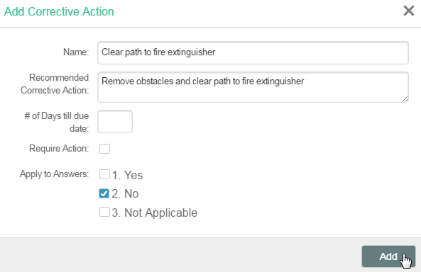
To create a dropdown list of possible corrective actions Do not specify an answer that the corrective action applies to. When the user clicks the Corrective Action button, the Corrective Action dialog will appear with any corrective actions created for this question that are not answer-specific in a drop-down list. Users can choose a corrective action, then assign it and attach documents as needed.
To edit corrective actions for a question:
Select the name of the corrective action.
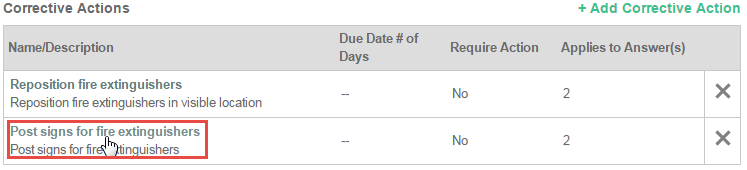
To delete a corrective action, click the X.